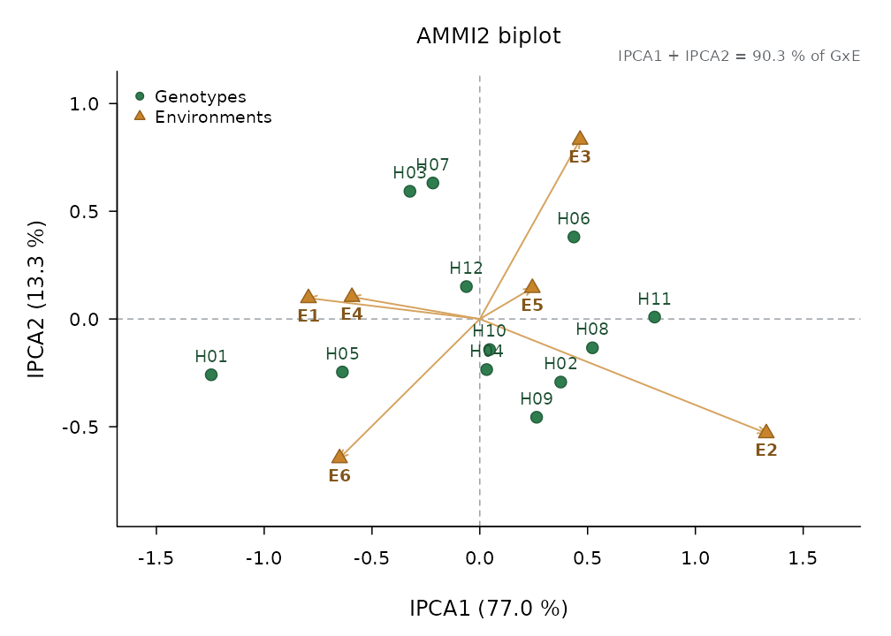

The data sets of this vignette are simulated maize trials shipped with the package.
Genotype x environment interaction: AMMI
Twelve hybrids in six environments with three blocks each:
am <- ammi(maize_met, "Yield_t_ha", "Hybrid", "Environment", block = "Block")
am
#>
#> AMMI analysis (additive main effects and multiplicative interaction)
#> Response: Yield_t_ha 12 genotypes x 6 environments, 3 replicate(s) per cell
#>
#> Df Sum Sq Mean Sq F value Pr(>F)
#> ENV 5 223.530 44.70598 640.9333 3.934e-14 ***
#> REP(ENV) 12 0.837 0.06975 0.7751 6.751e-01
#> GEN 11 55.358 5.03256 55.9199 3.083e-44 ***
#> GxE 55 46.314 0.84207 9.3567 7.883e-26 ***
#> IPCA1 15 35.672 2.37814 26.4250 1.433e-32 ***
#> IPCA2 13 6.148 0.47291 5.2548 1.623e-07 ***
#> IPCA3 11 2.166 0.19693 2.1883 1.857e-02 *
#> IPCA4 9 1.932 0.21471 2.3858 1.553e-02 *
#> IPCA5 7 0.395 0.05642 0.6270 7.329e-01
#> Residuals 132 11.879 0.09000
#> Total 215 337.918 1.57171
#>
#> Tested against another mean square:
#> ENV vs REP(ENV)
#> ---
#> Signif. codes: 0 '***' 0.001 '**' 0.01 '*' 0.05 '.' 0.1 ' ' 1
#>
#> Interaction principal components (degrees of freedom of Gollob 1968):
#> Axis Singular value % of GxE Cumulative % Df
#> IPCA1 3.4483 77.0230 77.02 15
#> IPCA2 1.4315 13.2743 90.30 13
#> IPCA3 0.8498 4.6774 94.97 11
#> IPCA4 0.8026 4.1725 99.15 9
#> IPCA5 0.3628 0.8528 100.00 7
#>
#> Genotypes (scores scaled by the square root of the singular values):
#> genotype mean IPCA1 IPCA2 IPCA3 IPCA4 IPCA5 asv rank_asv rank_mean ysi
#> H01 6.744 -1.24559 -0.258888 -0.37635 -0.03218 -0.16010 7.2320 12 10 22
#> H02 7.810 0.37546 -0.292771 -0.40520 -0.24545 -0.04840 2.1982 7 3 10
#> H03 7.151 -0.32400 0.592630 0.25185 -0.14068 0.01651 1.9712 6 8 14
#> H04 6.728 0.03191 -0.234722 -0.11019 0.33904 0.16551 0.2990 1 11 12
#> H05 6.697 -0.63723 -0.245923 0.24978 -0.07036 0.31191 3.7056 10 12 22
#> H06 7.547 0.43642 0.380649 -0.06068 -0.26766 -0.20347 2.5608 8 6 14
#> H07 8.273 -0.21749 0.631256 -0.14614 -0.09191 0.17254 1.4111 4 1 5
#> H08 6.832 0.52259 -0.133743 -0.08028 0.05611 -0.09564 3.0352 9 9 18
#> H09 7.846 0.26358 -0.455973 0.36295 -0.46052 -0.02437 1.5959 5 2 7
#> H10 7.622 0.04554 -0.141894 0.45488 0.30089 -0.16773 0.2999 2 5 7
#> H11 7.208 0.81086 0.008989 -0.18422 0.18793 0.24058 4.7050 11 7 18
#> H12 7.731 -0.06205 0.150390 0.04360 0.42479 -0.20735 0.3902 3 4 7
#>
#> Environments:
#> environment mean IPCA1 IPCA2 IPCA3 IPCA4 IPCA5
#> E1 5.542 -0.7948 0.09704 0.07162 0.71440 -0.02413
#> E2 6.586 1.3289 -0.53007 0.21902 0.16833 -0.10965
#> E3 7.407 0.4653 0.83225 -0.32260 -0.11686 -0.23112
#> E4 7.777 -0.5931 0.10250 0.65074 -0.41498 -0.06342
#> E5 8.453 0.2439 0.14419 -0.11232 -0.08474 0.53123
#> E6 8.329 -0.6502 -0.64591 -0.50646 -0.26615 -0.10291
#>
#> ASV: AMMI stability value (Purchase et al. 2000); YSI = rank of ASV + rank of the mean.The AMMI2 biplot shows which hybrids interact with which environments; points near the origin are stable:
plot(am, type = "ammi2")
Stability
stability() gathers the classical stability statistics:
Eberhart and Russell’s regression, Finlay and Wilkinson, Shukla’s
stability variance, Wricke’s ecovalence, Kang’s yield-stability
statistic and Huehn’s nonparametric measures.
st <- stability(maize_met, "Yield_t_ha", "Hybrid", "Environment", block = "Block")
st
#>
#> Stability analysis of a multi-environment trial
#> Response: Yield_t_ha 12 genotypes x 6 environments, 3 replicate(s) per cell
#>
#> Analysis of variance (plot scale; Shukla 1972):
#> Df Sum Sq Mean Sq F value Pr(>F)
#> Genotypes 11 55.358 5.0326 5.9765 2.647e-06 ***
#> Environments 5 223.530 44.7060 496.7562 9.569e-84 ***
#> GxE 55 46.314 0.8421 9.3567 7.883e-26 ***
#> Heterogeneity 11 1.786 0.1624 0.1604 9.988e-01
#> Residual 44 44.528 1.0120 11.2449 1.286e-27 ***
#> Pooled error 132 11.879 0.0900
#> Total 71 325.202 4.5803
#>
#> Tested against another mean square:
#> Genotypes vs GxE
#> Heterogeneity vs Residual
#> ---
#> Signif. codes: 0 '***' 0.001 '**' 0.01 '*' 0.05 '.' 0.1 ' ' 1
#>
#> Eberhart and Russell (1966): regression on the environmental index
#> Df Sum Sq Mean Sq F value Pr(>F)
#> Genotypes 11 55.358 5.0326 4.9729 5.596e-05 ***
#> Env + (G x E) 60 269.844 4.4974
#> Environments (linear) 1 223.530 223.5299
#> G x E (linear) 11 1.786 0.1624 0.1604 9.988e-01
#> Pooled deviation 44 44.528 1.0120 11.2449 1.286e-27 ***
#> Pooled error 132 11.879 0.0900
#>
#> Tested against another mean square:
#> Genotypes vs Pooled deviation
#> G x E (linear) vs Pooled deviation
#> ---
#> Signif. codes: 0 '***' 0.001 '**' 0.01 '*' 0.05 '.' 0.1 ' ' 1
#>
#> genotype mean b se_b t_b1 p_b1 s2d F_dev p_dev r2
#> H01 6.744 1.0761 0.47231 0.16108 0.87984 1.355129 46.1731 3.253e-24 0.5648
#> H02 7.810 1.1125 0.17013 0.66155 0.54442 0.149721 5.9909 1.842e-04 0.9145
#> H03 7.151 1.0137 0.19387 0.07069 0.94704 0.203370 7.7793 1.164e-05 0.8724
#> H04 6.728 0.9249 0.08022 -0.93652 0.40203 0.009962 1.3321 2.614e-01 0.9708
#> H05 6.697 1.0482 0.25099 0.19199 0.85711 0.361168 13.0395 5.618e-09 0.8134
#> H06 7.547 1.0506 0.19287 0.26257 0.80585 0.200983 7.6997 1.314e-05 0.8812
#> H07 8.273 1.0509 0.17414 0.29224 0.78463 0.158303 6.2770 1.178e-04 0.9010
#> H08 6.832 0.9708 0.19796 -0.14760 0.88980 0.213339 8.1116 7.032e-06 0.8574
#> H09 7.846 1.1084 0.17337 0.62540 0.56562 0.156641 6.2216 1.285e-04 0.9109
#> H10 7.622 0.8438 0.07592 -2.05768 0.10874 0.005788 1.1930 3.169e-01 0.9686
#> H11 7.208 0.9597 0.30665 -0.13145 0.90177 0.553866 19.4630 1.312e-12 0.7100
#> H12 7.731 0.8404 0.04465 -3.57475 0.02328 -0.017620 0.4126 7.993e-01 0.9888
#> b: SE from the genotype's own deviations (e - 2 df), t tests b = 1; s2d = MS deviations - error of a mean.
#>
#> Finlay and Wilkinson (1963): regression on the environment mean
#> genotype mean intercept b se_b r2
#> H01 6.744 -1.1638 1.0761 0.47231 0.5648
#> H02 7.810 -0.3663 1.1125 0.17013 0.9145
#> H03 7.151 -0.2987 1.0137 0.19387 0.8724
#> H04 6.728 -0.0692 0.9249 0.08022 0.9708
#> H05 6.697 -1.0060 1.0482 0.25099 0.8134
#> H06 7.547 -0.1741 1.0506 0.19287 0.8812
#> H07 8.273 0.5496 1.0509 0.17414 0.9010
#> H08 6.832 -0.3027 0.9708 0.19796 0.8574
#> H09 7.846 -0.2999 1.1084 0.17337 0.9109
#> H10 7.622 1.4206 0.8438 0.07592 0.9686
#> H11 7.208 0.1554 0.9597 0.30665 0.7100
#> H12 7.731 1.5550 0.8404 0.04465 0.9888
#>
#> Shukla (1972): stability variance sigma2 and s2 (heterogeneity removed), plot scale
#> genotype mean sigma2 F p s2 F_s2 p_s2
#> H01 6.744 3.93084 43.6780 2.154e-26 4.88526 54.2832 5.549e-27
#> H02 7.810 0.49002 5.4449 1.376e-04 0.54579 6.0646 1.641e-04
#> H03 7.151 0.58873 6.5418 1.811e-05 0.73893 8.2107 6.054e-06
#> H04 6.728 0.05612 0.6235 6.821e-01 0.04266 0.4740 7.547e-01
#> H05 6.697 1.05273 11.6976 2.275e-09 1.30700 14.5229 7.448e-10
#> H06 7.547 0.59249 6.5835 1.678e-05 0.73033 8.1152 6.994e-06
#> H07 8.273 0.46968 5.2189 2.098e-04 0.57669 6.4079 9.611e-05
#> H08 6.832 0.62042 6.8939 9.517e-06 0.77482 8.6095 3.321e-06
#> H09 7.846 0.50588 5.6211 9.916e-05 0.57070 6.3414 1.066e-04
#> H10 7.622 0.12796 1.4218 2.205e-01 0.02763 0.3071 8.728e-01
#> H11 7.208 1.60459 17.8296 1.775e-13 2.00071 22.2312 4.766e-14
#> H12 7.731 0.06533 0.7260 6.051e-01 -0.05664 -0.6293 1.000e+00
#>
#> Wricke (1962): ecovalence W (plot scale) and its share of the interaction (%)
#> genotype mean W pct
#> H01 6.744 16.7293 36.122
#> H02 7.810 2.3926 5.166
#> H03 7.151 2.8039 6.054
#> H04 6.728 0.5847 1.262
#> H05 6.697 4.7373 10.229
#> H06 7.547 2.8196 6.088
#> H07 8.273 2.3079 4.983
#> H08 6.832 2.9360 6.339
#> H09 7.846 2.4587 5.309
#> H10 7.622 0.8840 1.909
#> H11 7.208 7.0366 15.193
#> H12 7.731 0.6231 1.345
#>
#> Kang (1993): yield-stability statistic YS
#> genotype mean rank adjustment adjusted_rank sigma2 rating ys selected
#> H01 6.744 3 -3 0 3.93084 -8 -8 FALSE
#> H02 7.810 10 3 13 0.49002 -8 5 TRUE
#> H03 7.151 5 -2 3 0.58873 -8 -5 FALSE
#> H04 6.728 2 -3 -1 0.05612 0 -1 FALSE
#> H05 6.697 1 -3 -2 1.05273 -8 -10 FALSE
#> H06 7.547 7 2 9 0.59249 -8 1 TRUE
#> H07 8.273 12 3 15 0.46968 -8 7 TRUE
#> H08 6.832 4 -3 1 0.62042 -8 -7 FALSE
#> H09 7.846 11 3 14 0.50588 -8 6 TRUE
#> H10 7.622 8 2 10 0.12796 0 10 TRUE
#> H11 7.208 6 -1 5 1.60459 -8 -3 FALSE
#> H12 7.731 9 2 11 0.06533 0 11 TRUE
#> LSD (alpha = 0.05) = 0.1978 mean YS = 0.5; selected: YS above the mean
#>
#> Huehn (1979): rank statistics with the Z tests of Nassar and Huehn (1987)
#> genotype mean rank_mean S1 Z1 p1 S2 Z2 p2
#> H01 6.744 3 6.467 6.5572 0.01045 32.300 14.836374 0.0001173
#> H02 7.810 10 4.400 0.1928 0.66056 14.267 0.197203 0.6569882
#> H03 7.151 5 4.067 0.0094 0.92276 11.500 0.006199 0.9372420
#> H04 6.728 2 2.133 3.5635 0.05906 3.067 2.796816 0.0944517
#> H05 6.697 1 5.733 3.2685 0.07062 23.600 4.874285 0.0272597
#> H06 7.547 7 4.533 0.3318 0.56460 13.467 0.085791 0.7695981
#> H07 8.273 12 3.400 0.3451 0.55692 8.300 0.467083 0.4943321
#> H08 6.832 4 3.467 0.2693 0.60377 8.267 0.475733 0.4903616
#> H09 7.846 11 4.400 0.1928 0.66056 12.800 0.027863 0.8674315
#> H10 7.622 8 3.000 0.9961 0.31826 6.300 1.126509 0.2885212
#> H11 7.208 6 6.333 5.8749 0.01536 29.100 10.543679 0.0011659
#> H12 7.731 9 2.733 1.6175 0.20345 5.367 1.532004 0.2158119
#> E(S1) = 3.972 Var(S1) = 0.9489 E(S2) = 11.92 Var(S2) = 28
#> Sum of Z1 = 23.22 (p = 0.0259) Sum of Z2 = 36.97 (p = 0.000226); chi-square critical values: 8.21 (each Z, Bonferroni), 21.03 (sum)Line x tester
lt <- line_tester(maize_lxt, "Yield_t_ha", "Line", "Tester", block = "Block")
lt
#>
#> Line x tester analysis (Kempthorne 1957)
#> Response: Yield_t_ha 6 lines x 3 testers, 9 parents, r = 3
#>
#> Df Sum Sq Mean Sq F value Pr(>F)
#> Blocks 2 0.6015 0.30076 5.880 4.988e-03 **
#> Entries 26 128.2189 4.93150 96.409 2.175e-35 ***
#> Parents 8 3.8639 0.48299 9.442 6.072e-08 ***
#> Lines (parents) 5 3.0794 0.61588 12.040 9.132e-08 ***
#> Testers (parents) 2 0.5283 0.26413 5.164 9.004e-03 **
#> Lines vs testers 1 0.2563 0.25627 5.010 2.951e-02 *
#> Parents vs crosses 1 107.0510 107.05096 2092.815 1.114e-43 ***
#> Crosses 17 17.3040 1.01788 19.899 5.536e-17 ***
#> Lines 5 10.0670 2.01340 39.361 1.609e-16 ***
#> Testers 2 2.8244 1.41219 27.608 6.751e-09 ***
#> Lines x Testers 10 4.4126 0.44126 8.626 4.125e-08 ***
#> Error 52 2.6599 0.05115
#> Total 80 131.4803 1.64350
#> ---
#> Signif. codes: 0 '***' 0.001 '**' 0.01 '*' 0.05 '.' 0.1 ' ' 1
#>
#> Line x tester analysis (random model: lines and testers against L x T):
#> Df Sum Sq Mean Sq F value Pr(>F)
#> Lines 5 10.067 2.01340 4.563 1.989e-02 *
#> Testers 2 2.824 1.41219 3.200 8.427e-02 .
#> Lines x Testers 10 4.413 0.44126 8.626 4.125e-08 ***
#> Error 52 2.660 0.05115
#>
#> Tested against another mean square:
#> Lines vs Lines x Testers
#> Testers vs Lines x Testers
#> ---
#> Signif. codes: 0 '***' 0.001 '**' 0.01 '*' 0.05 '.' 0.1 ' ' 1
#>
#> GCA effects of lines:
#> line mean gca se t p
#> L1 7.512 0.4913 0.07539 6.517 2.915e-08
#> L2 6.691 -0.3298 0.07539 -4.375 5.868e-05
#> L3 7.207 0.1857 0.07539 2.464 1.709e-02
#> L4 6.321 -0.6998 0.07539 -9.283 1.274e-12
#> L5 7.499 0.4780 0.07539 6.340 5.571e-08
#> L6 6.896 -0.1254 0.07539 -1.663 1.023e-01
#>
#> GCA effects of testers:
#> tester mean gca se t p
#> T1 7.333 0.3124 0.05331 5.86 3.196e-07
#> T2 6.792 -0.2287 0.05331 -4.29 7.781e-05
#> T3 6.937 -0.0837 0.05331 -1.57 1.224e-01
#>
#> SCA effects:
#> T1 T2 T3
#> L1 0.19 -0.27 0.08
#> L2 0.03 -0.24 0.21
#> L3 -0.04 0.44 -0.40
#> L4 -0.42 0.54 -0.11
#> L5 -0.14 -0.21 0.36
#> L6 0.39 -0.25 -0.14
#>
#> Standard errors:
#> GCA line GCA tester SCA GCA line difference
#> 0.07539 0.05331 0.13060 0.10660
#> GCA tester difference SCA difference
#> 0.07539 0.18470
#>
#> Genetic components:
#> component estimate
#> Cov HS (lines) 0.17468
#> Cov HS (testers) 0.05394
#> Cov HS (average) 0.12102
#> Cov FS 0.29158
#> sigma2 GCA (= Cov HS) 0.12102
#> sigma2 SCA 0.13004
#>
#> F sigma2_A sigma2_D dominance
#> 0 0.4841 0.5201 1.466
#> 1 0.2420 0.1300 1.037
#>
#> Contribution to the variation among crosses (%):
#> lines testers lxt
#> 58.18 16.32 25.50Diallel crosses
Griffing’s four methods (with or without parents and reciprocals), with the general and specific combining abilities and their standard errors:
dl <- diallel(maize_diallel, "Yield_t_ha", "Female", "Male", block = "Block", method = 4)
dl
#>
#> Diallel analysis, Griffing (1956) method 4 (F1 only)
#> Response: Yield_t_ha 6 parents, r = 3; 63 row(s) outside this method left out
#>
#> Analysis of variance of the entries (plot scale):
#> Df Sum Sq Mean Sq F value Pr(>F)
#> Blocks 2 0.7486 0.3743 2.821 7.656e-02 .
#> Entries 14 21.0156 1.5011 11.313 4.679e-08 ***
#> Error 28 3.7154 0.1327
#> Total 44 25.4795 0.5791
#> ---
#> Signif. codes: 0 '***' 0.001 '**' 0.01 '*' 0.05 '.' 0.1 ' ' 1
#>
#> Combining ability (scale of entry means; error = MSE / r):
#> Df Sum Sq Mean Sq F value Pr(>F)
#> GCA 5 4.769 0.95383 21.565 8.137e-09 ***
#> SCA 9 2.236 0.24845 5.617 1.927e-04 ***
#> Error 28 1.238 0.04423
#> ---
#> Signif. codes: 0 '***' 0.001 '**' 0.01 '*' 0.05 '.' 0.1 ' ' 1
#> Model II: GCA against SCA, F = 3.839 on 5 and 9 df, p = 0.0386
#>
#> GCA effects:
#> parent estimate se t p
#> P1 0.74944 0.09599 7.8073 1.668e-08
#> P2 -0.50889 0.09599 -5.3013 1.218e-05
#> P3 0.26611 0.09599 2.7722 9.788e-03
#> P4 -0.54556 0.09599 -5.6833 4.306e-06
#> P5 -0.01556 0.09599 -0.1620 8.724e-01
#> P6 0.05444 0.09599 0.5672 5.751e-01
#>
#> SCA effects:
#> parent1 parent2 estimate se t p
#> P1 P2 -0.40367 0.1629 -2.4779 1.951e-02
#> P1 P3 -0.02200 0.1629 -0.1350 8.935e-01
#> P1 P4 0.01967 0.1629 0.1207 9.048e-01
#> P1 P5 0.53967 0.1629 3.3127 2.556e-03
#> P1 P6 -0.13367 0.1629 -0.8205 4.189e-01
#> P2 P3 0.48300 0.1629 2.9649 6.126e-03
#> P2 P4 -0.26200 0.1629 -1.6083 1.190e-01
#> P2 P5 0.15133 0.1629 0.9290 3.608e-01
#> P2 P6 0.03133 0.1629 0.1923 8.489e-01
#> P3 P4 0.56633 0.1629 3.4764 1.676e-03
#> P3 P5 -0.95367 0.1629 -5.8541 2.712e-06
#> P3 P6 -0.07367 0.1629 -0.4522 6.546e-01
#> P4 P5 -0.11867 0.1629 -0.7284 4.724e-01
#> P4 P6 -0.20533 0.1629 -1.2604 2.179e-01
#> P5 P6 0.38133 0.1629 2.3408 2.659e-02
#>
#> Standard errors of differences:
#> difference se
#> g_i - g_j 0.1487
#> s_ij - s_ik 0.2576
#> s_ij - s_kl 0.2103
#>
#> Model I (fixed effects):
#> quantity estimate
#> sum(g^2)/(p - 1) 0.2274
#> sum(s^2)/df 0.2042
#>
#> Model II (random effects), entry-mean scale:
#> component estimate se
#> sigma2 GCA 0.17635 0.15363
#> sigma2 SCA 0.20422 0.11771
#> sigma2 error (entry mean) 0.04423 0.01182
#>
#> Genetic parameters (inbreeding of the parents F = 1):
#> parameter estimate
#> sigma2_A 0.3527
#> sigma2_D 0.2042
#> dominance ratio sqrt(2 sigma2_D / sigma2_A) 1.0761
#> Baker ratio 2 sigma2_GCA / (2 sigma2_GCA + sigma2_SCA) 0.6333North Carolina designs
Designs I, II and III estimate the additive and dominance variances from the analysis of variance of the progenies:
nc_design(nc_designs$nc2, "Yield_t_ha", "Male", "Female", block = "Rep", set = "Set", design = 2)
#>
#> North Carolina design II (males x females)
#> Response: Yield_t_ha sets = 2, blocks per set = 2, males per set = 4, females per set = 4
#>
#> Df Sum Sq Mean Sq F value Pr(>F)
#> Sets 1 9.602 9.6023
#> Blocks(sets) 2 2.489 1.2447 11.938 0.0001534 ***
#> Males(sets) 6 15.595 2.5992 8.520 0.0001777 ***
#> Females(sets) 6 9.972 1.6620 5.448 0.0022916 **
#> Males x Females(sets) 18 5.491 0.3051 2.926 0.0045367 **
#> Error 30 3.128 0.1043
#> Total 63 46.278 0.7346
#>
#> Tested against another mean square:
#> Males(sets) vs Males x Females(sets)
#> Females(sets) vs Males x Females(sets)
#> ---
#> Signif. codes: 0 '***' 0.001 '**' 0.01 '*' 0.05 '.' 0.1 ' ' 1
#>
#> Expected mean squares:
#> Males(sets) Ve + 2 Vmf + 8 Vm
#> Females(sets) Ve + 2 Vmf + 8 Vf
#> Males x Females(sets) Ve + 2 Vmf
#> Error Ve
#>
#> Variance components:
#> component estimate se
#> Vm (males) 0.2868 0.18801
#> Vf (females) 0.1696 0.12061
#> Vmf (males x females) 0.1004 0.05259
#>
#> Genetic parameters (inbreeding of the parents F = 0):
#> parameter estimate se
#> sigma2_A (males) 1.1471 0.7521
#> sigma2_A (females) 0.6785 0.4825
#> sigma2_A (pooled) 0.9128 0.4482
#> sigma2_D 0.4016 0.2104
#> dominance ratio sqrt(2 sigma2_D / sigma2_A) 0.9380